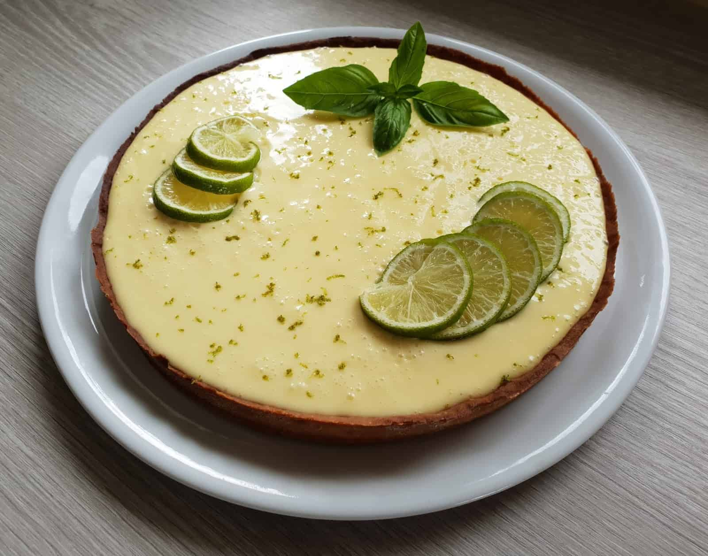
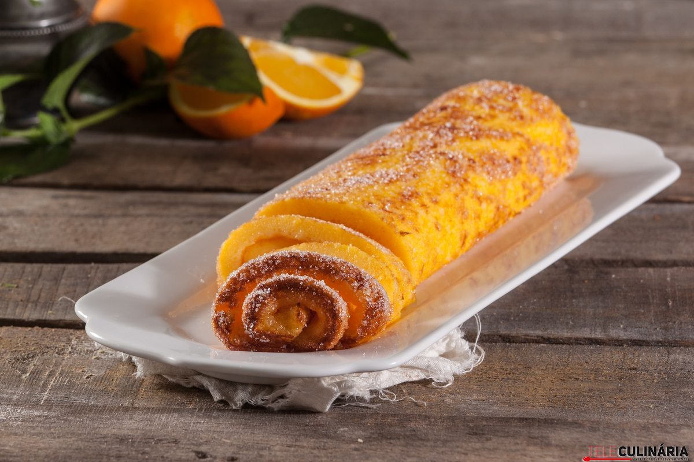

<!--
  Generated template for the SobremesaPage page.

  See http://ionicframework.com/docs/components/#navigation for more info on
  Ionic pages and navigation.
-->
<ion-header>
  <ion-navbar>
    <ion-title>sobremesa</ion-title>
  </ion-navbar>
</ion-header>

<ion-content padding>

  <ion-card>
    
    <ion-card-content>
      <ion-card-title>
        Torta de Limão
        </ion-card-title>
      <p>
        1 Pedaço de Torta Sabor Limão
      </p>
    </ion-card-content>
  </ion-card>

  <ion-card>
    
    <ion-card-content>
      <ion-card-title>
        Torta de Laranja
        </ion-card-title>
      <p>
        1 Pedaço de Torta Sabor Limão
      </p>
    </ion-card-content>
  </ion-card>

</ion-content>
